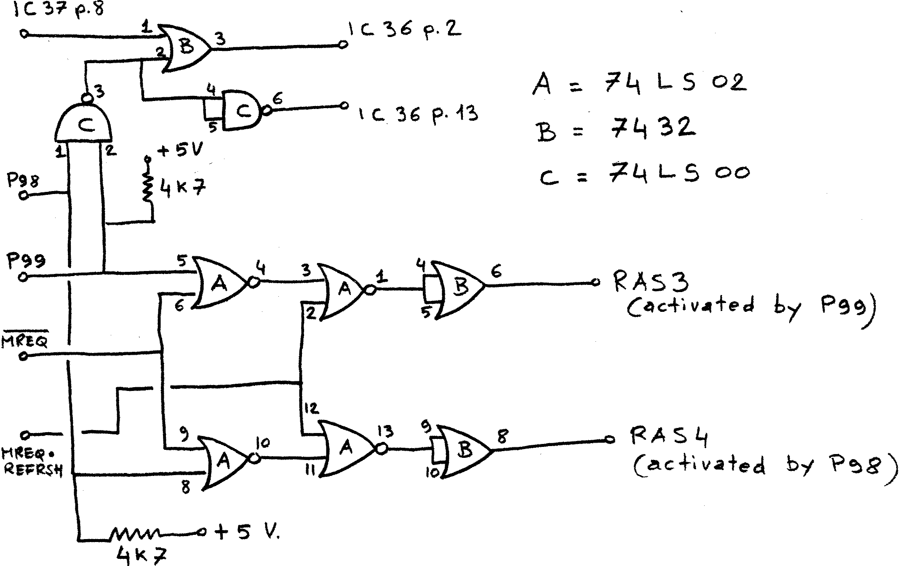

80-Bus News |
January–March 1982 · Volume 1 · Issue 1 |
| Page 12 of 55 |
|---|
I would like to take this opportunity of writing to you, to describe a modification I made on the memory board (the old type, RAM A) of my Nascom 2, to push it to the heights of 64K.
An article about this subject has already seen the light in INMC80-3, but the expansion was limited to 48K, and as I am planning to connect an IBM floppy disk drive 53FD (8″ double density, dual side, 1.2 Mbytes!) to the Nascom, I needed a full address space, to be able to run a fully fledged CP/M. The mods I have made to Mr. Fisher’s circuit are mainly concerned with the generation of the second additional RAS signal, and with ORing it with the previous one, in order to achieve correct enabling of the output buffer. The IC count has thus increased to three, which is still an acceptable figure.
The step-by-step instructions given by Mr Fisher are still valid, you just have an additional address select pad, let’s call it P98, and an additional RAS (RAS4) which must be connected to the fourth row of 4116’s piggy-backed on top of ICs 4-11. As already stated in the aforementioned article, you must not connect pin 4 of the top 4116s in parallel with pin 4 of the ICs below. Instead all pin 4s of the fourth row of 4116s must be wired in parallel and then to RAS4.
The circuit has been in operation on my Nascom 2 for a couple of months and has passed all sort of memory tests, op-code fetch included, with flying colours, running at 4 MHz without wait states.
Should someone be concerned with the problem of where to put in the address space of the NAS-SYS monitor, the 8k BASIC and the video-refresh RAM , having already 64K on the expansion board, well, this is a false problem…
In fact, the RAM board covers the full 64K address space, and the various ROMs and the video RAM are simply overlaid on it, thanks to the existence of the RAM-DIS signal on the NASBUS, which give precedence to memory on the CPU card. So when I’m ready for CP/M I’ll just have to substitute the N2MD PROM on the CPU card with a new one, suitably programmed, and the now masked RAM will suddenly appear starting from address 0. Simple, isn’t it?
| Page 12 of 55 |
|---|